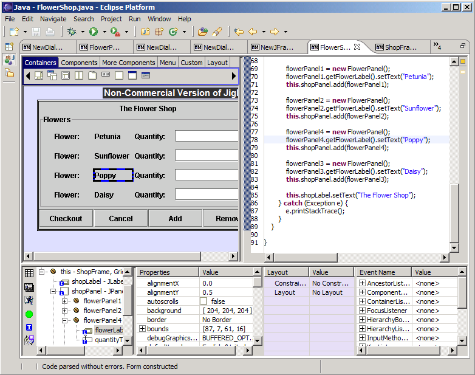

Jigloo Form/Source editor
This part of Jigloo comprises
the form editor (where you see the GUI being built), and the source editor for the java class.
In the screenshot below, the Form/Source editor occupies the top part
of the Eclipse window (the editor has been maximized by double-clicking
on the editor's tab. You can still use Jigloo in the non-maximized
format, but maximizing hides all the views which are not essential for
editing a GUI class.
The form editor is on the left, and the source editor on the right. The
horizontal split of the Form and Source editors is controlled by a
setting in the Jigloo Preferences Page.
To ease navigation between the GUI form and the Java source, Jigloo does the following:
- If a component
is selected in the Form editor, the source editor scrolls and
highlights the most relevant part of the source code
- If the cursor is
inside a statement in the source code which is relevant to one of the
components in the GUI (eg, jButton1.setText("OK")) then the form editor
will select the element (eg, jButton1) and will scroll if necessary to
bring it into view.
- If a property is selected in the GUI Properties Editor then
the source editor will scroll to the relevant line of code (eg, if the
"text" property is clicked on in the GUI Properties editor, then the
source editor will scroll to the linejButton1.setText("OK")).
- If a component is selected in the Outline View then both the Form and source editors will scroll to the relevant positions.

Adding components to the form
Components
can be added to the form by clicking on an icon in one of the tabs of
the component palette at the top of the form editor, and then clicking
on the form at the desired location. They can also be added by
right-clicking on a container component in the form editor or in the Outline View and choosing one of the menu options. (The menu options can be hidden by a setting in the Preferences Page).
Setting Layouts for Containers
Layouts
can be set in the same way as components are added, by selecting a
layout from the "Layouts" tab in the palette above the form editor, and
clicking on the container in the form editor. By default, SWT
containers (Composites, Groups etc) are given a GridLayout. Swing
containers usually have a default layout already set, for example
JPanels have
a FlowLayout by default. It is easy to experiment with different
layouts in Jigloo, but at least a brief look at the javadoc for layouts
is recommended.
Undoing/redoing changes
There
are two ways to undo/redo changes - one is in the Form editor and the
other is in the Source editor. The keystrokes are the same in either
case (eg, Ctrl-Z, Ctrl-Y), but in the unlikely event that something
goes wrong in the form editor then undoing a change in the source
editor is the safest way to restore the code.
Copy/Cut/Paste/Delete
The form editor supports cut/copy/paste/delete of elements through the usual keystrokes or menu options.
Moving components around
Components can be rearranged inside a container by dragging them
using the mouse. Components can be dragged by clicking on the center of
the component, or dragging one of the blue regions of the border around
a selected component or components.
Resizing components
Except in the Swing GridBag, and SWT Grid layouts, components can be
resized by dragging one of the black regions in the border of a
selected component. If multiple components are selected then they will
all be given the same size, which can be a useful time-saver.
Parsing Code
To read about how Jigloo parses the java code, and how to control it, read this section.